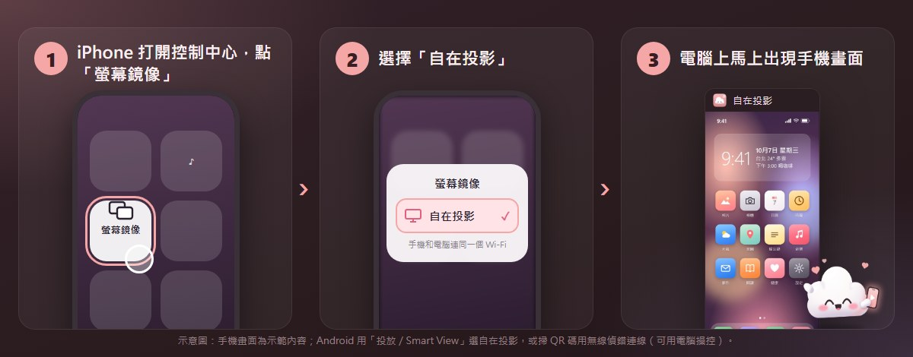
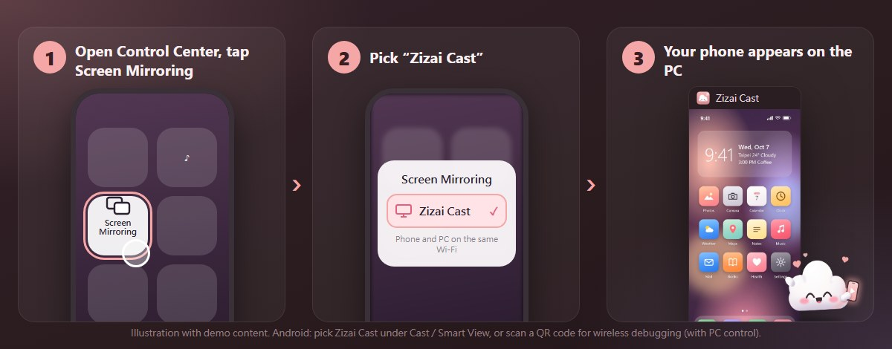
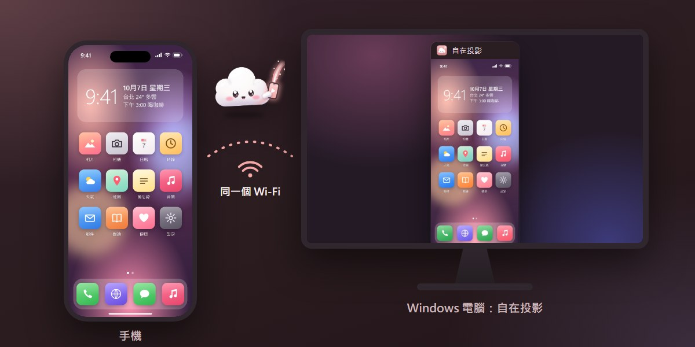
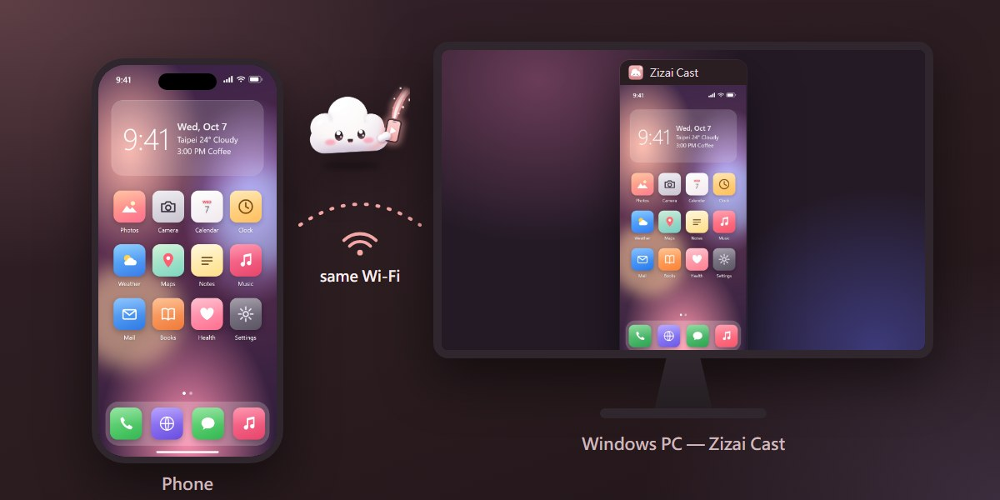
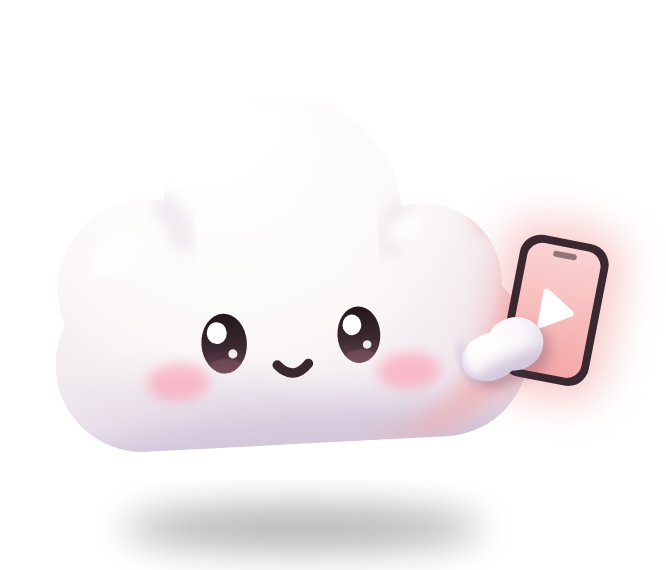

把 iPhone、iPad、Android 手機畫面無線投影到 Windows 電腦。Mirror your iPhone, iPad or Android phone to a Windows PC — wirelessly.
iPhone 不用裝 App；Android 還能用滑鼠鍵盤直接操控。錄影、截圖、低延遲，最高 4K / 60 fps。No app on the iPhone; drive an Android phone with your mouse and keyboard. Recording, screenshots, low latency, up to 4K / 60 fps.
實測Measured
開發者在一台電腦上的實測（RTX 3060 Ti，2026 年 10 月）；整體延遲還包含手機編碼與 Wi‑Fi，會依設備與網路而不同。Developer measurements on one PC (RTX 3060 Ti, October 2026). End-to-end latency also includes the phone's encoder and Wi‑Fi and varies by device and network.
v0.7.2 新功能New in v0.7.2
最多放大 8 倍（Ctrl+滾輪），小地圖可拖曳；弱視濾鏡：加強對比、黑白、反轉、黃字黑底（Ctrl+K）；凍結畫面（Ctrl+P）。
Zoom up to 8× (Ctrl+wheel) with a draggable overview; low-vision colours: more contrast, greyscale, inverted, yellow on black (Ctrl+K); freeze the picture (Ctrl+P).
Ctrl+L 翻譯畫面上的英文、日文、韓文、簡體中文，連手機相機拍到的包裝、招牌、菜單也行。內建文字辨識（OCR），在電腦上離線執行，文字不會上傳。
Ctrl+L translates English, Japanese, Korean and Simplified Chinese on screen — even packaging, signs and menus seen through the phone camera. Built-in text recognition (OCR) runs offline on your PC; no text is uploaded.
截圖、錄影一次勾選多張傳到手機：Android（無線偵錯）直接存進相簿，iPhone 掃 QR 碼儲存（同一個 Wi‑Fi）。
Send several screenshots and recordings at once: straight into the gallery on Android (wireless debugging), or scan a QR code on an iPhone (same Wi‑Fi).
介面和安裝程式新增日本語與한국어；有新版時會顯示更新內容，可立即更新、稍後提醒或略過。The app and installer now also speak 日本語 and 한국어; a new update window shows what changed, with Update now, Remind me later or Skip.
怎麼用How it works
安裝後手機和電腦連同一個 Wi‑Fi，從手機選「自在投影」就好。第一次開啟時 Windows 防火牆詢問，請允許「私人網路」。Install, put phone and PC on the same Wi‑Fi, and pick “Zizai Cast” on the phone. Allow Private networks when Windows Firewall asks the first time.


控制中心 →「螢幕鏡像」→「自在投影」。畫面＋聲音，免裝 App。
Control Center → Screen Mirroring → Zizai Cast. Picture and sound, no app.
快速設定「投放／Smart View」→「自在投影」。電腦需 Windows「無線顯示器」功能。
Quick Settings → Cast / Smart View → Zizai Cast. The PC needs the Windows “Wireless Display” feature.
Android 11 以上開「無線偵錯」，掃電腦上的 QR 碼；之後自動重連。
Android 11+: turn on Wireless debugging and scan the QR code on the PC; reconnects automatically.
功能Features
以下都是程式的實際畫面；手機內容是示範用的合成畫面。All images show the real app; the phone content is a synthetic demo screen.
隱私Privacy
畫面、聲音、錄影、截圖都只在你的區域網路和電腦裡。沒有遙測、沒有分析、沒有廣告、不用帳號。
Picture, sound, recordings and screenshots stay on your LAN and your PC. No telemetry, no analytics, no ads, no account.
update.json（不帶任何裝置資訊）。settings.ini 加上 update_url=。update.json from GitHub (no device information).update_url= to settings.ini.需求Requirements


| 電腦 | Windows 10 / 11，64 位元 |
|---|---|
| 網路 | 手機和電腦同一個區域網路（建議 5 GHz Wi‑Fi） |
| iPhone / iPad | 有「螢幕鏡像」即可，免裝 App |
| Android 投放 | 手機支援投放／Smart View；電腦需「無線顯示器」功能與支援的 Wi‑Fi 網卡（Pixel 不支援 Miracast） |
| Android 電腦操控 | Android 11 以上，開啟無線偵錯 |
| 1440p / 4K | 需要 HEVC 影片延伸模組，否則自動用 1080p |
| PC | Windows 10 / 11, 64-bit |
|---|---|
| Network | Phone and PC on the same LAN (5 GHz Wi‑Fi recommended) |
| iPhone / iPad | Screen Mirroring — no app needed |
| Android Cast | Phone with Cast / Smart View; PC with the “Wireless Display” feature and a supporting Wi‑Fi adapter (Pixel phones don't do Miracast) |
| Android control | Android 11+ with Wireless debugging |
| 1440p / 4K | HEVC Video Extensions; otherwise 1080p |
FAQ
安裝程式目前沒有數位簽章，請按「其他資訊」→「仍要執行」。也可以從 Release 頁面下載原始碼自己建置。
不行，AirPlay 只傳畫面和聲音。用電腦操控只支援 Android（無線偵錯）。
有 DRM 保護的影片在鏡像時會被手機本身遮黑，任何接收程式都無法繞過。
電腦要安裝 Windows 選用功能「無線顯示器」並重新開機，Wi‑Fi 網卡也要支援（netsh wlan show drivers）。不行就改用無線偵錯。
是的：GPL-3.0 開源、沒有付費版、沒有廣告、不收集資料。喜歡的話請到 GitHub 按 ⭐。
The installer isn't code-signed yet. Click More info → Run anyway, or build from the source zip on the release page.
No — AirPlay carries picture and sound only. PC control works for Android (wireless debugging).
DRM-protected video is blacked out by the phone itself during mirroring; no receiver can bypass that.
Install the Windows optional feature “Wireless Display”, reboot, and check your Wi‑Fi adapter (netsh wlan show drivers). Otherwise use wireless debugging.
Yes: GPL-3.0, no paid tier, no ads, no data collection. A ⭐ on GitHub helps others find it.
